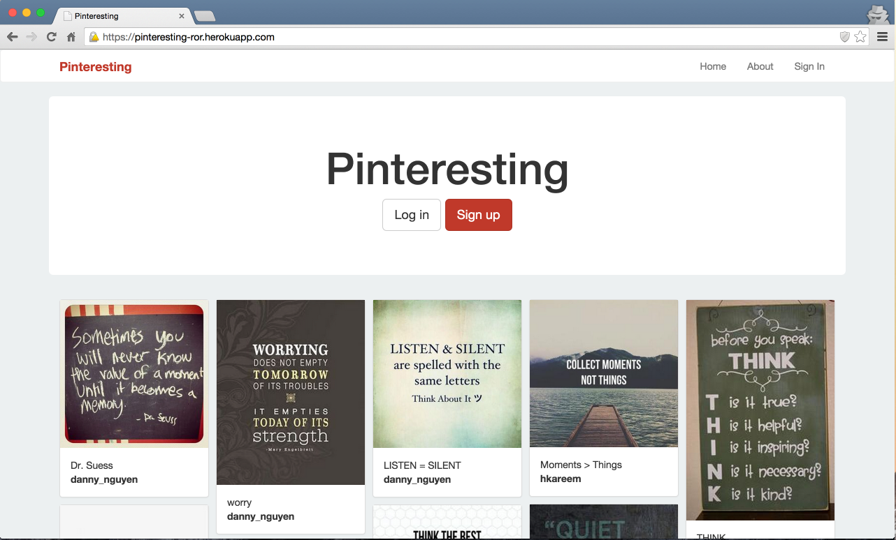
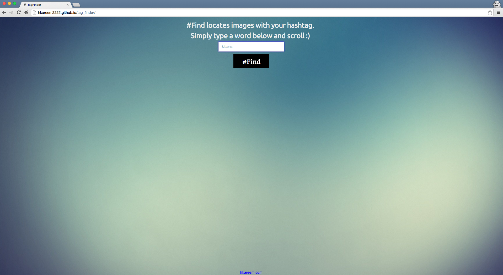
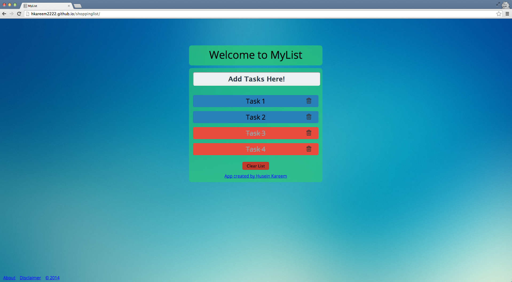
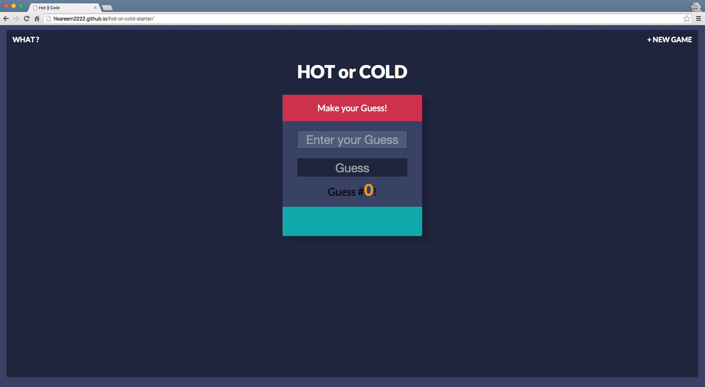
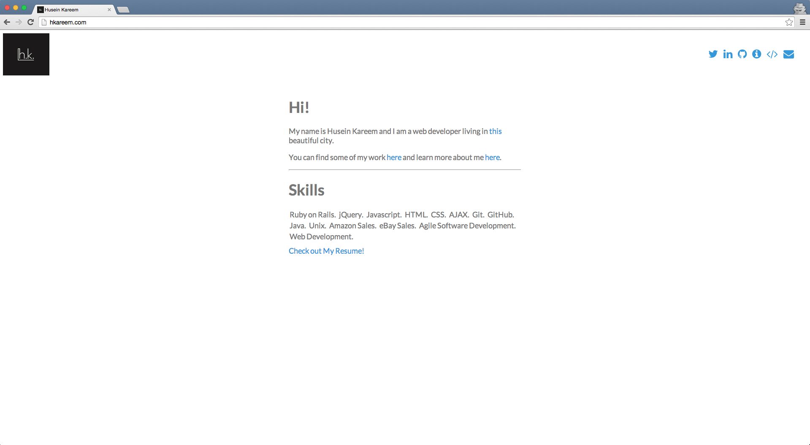
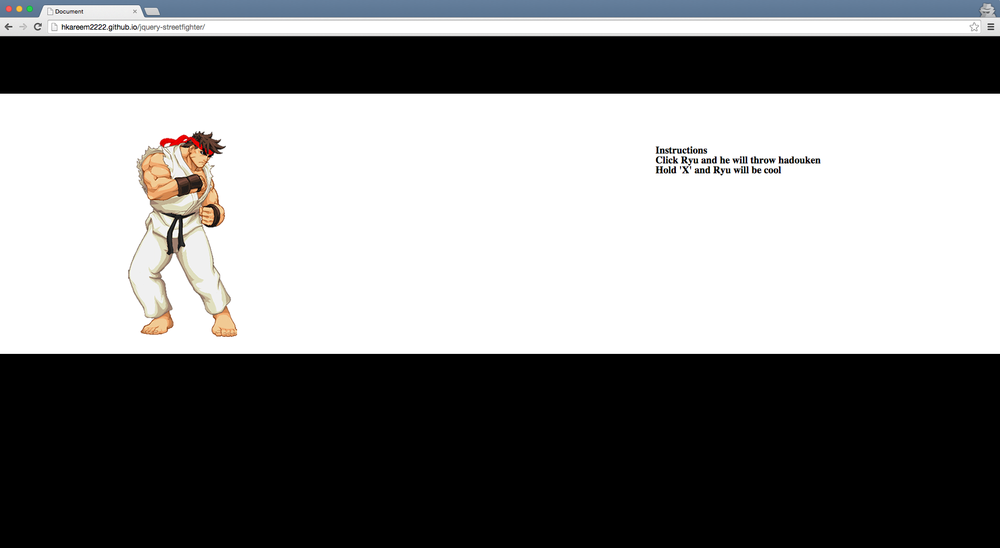
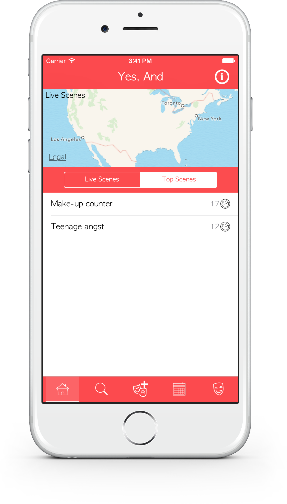

This application is a Pinterest clone built with Ruby on Rails . It was built as an assignment for the One Month Rails Course . The app is live at pinteresting-ror.herokuapp.com/.

Tag_Finder is an application that locates images with the hashtag you search for. It is powered with the Instagram api . The app is live at hkareem2222.github.io/tag_finder/.

MyList is an application that keeps track of your tasks. It was made as an assignment for Thinkful. A fully functional task list web application primarily focusing on using jQuery skills. Functionality: being able to add, delete, move, check, and uncheck tasks. The app is live at hkareem2222/github.io/shoppinglist (not optimized for mobile use).

Hot or Cold is an application that uses jQuery and enforces the concept of creating JavaScript functions. It was made as an assignment for Thinkful. The app is live at hkareem2222.github.io/hot-or-cold-starter.

A website sharing a little bit about me and my projects. Featuring social icons through Font Awesome. Live at hkareem.com (responsive and mobile friendly).

jQuery Streetfighter is an application that uses jQuery functions to animate gifs and images of Ryu. It was made as an assignment for Thinkful . The app is live at hkareem2222.github.io/jquery-streetfighter (not optimized for mobile use).

Yes, And is an online community where people create and watch improv comedy through real-time chat. Users, who can be anyone from career comedians to comedic novices, join a scene and get paired randomly with another performer to create funny hijinks on the fly.

Hudson Valley is an application primarily working with web views displaying a mobile optimed website (Client Work).
SpyeOutMedia is a sports promotion app prototype built for a client.